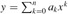

|
|
< Day Day Up > |
|
There are many ways to design algorithms. Insertion sort uses an incremental approach: having sorted the subarray A[1 ‥ j - 1], we insert the single element A[j] into its proper place, yielding the sorted subarray A[1 ‥ j].
In this section, we examine an alternative design approach, known as "divide-and-conquer." We shall use divide-and-conquer to design a sorting algorithm whose worst-case running time is much less than that of insertion sort. One advantage of divide-and-conquer algorithms is that their running times are often easily determined using techniques that will be introduced in Chapter 4.
Many useful algorithms are recursive in structure: to solve a given problem, they call themselves recursively one or more times to deal with closely related subproblems. These algorithms typically follow a divide-and-conquer approach: they break the problem into several subproblems that are similar to the original problem but smaller in size, solve the subproblems recursively, and then combine these solutions to create a solution to the original problem.
The divide-and-conquer paradigm involves three steps at each level of the recursion:
Divide the problem into a number of subproblems.
Conquer the subproblems by solving them recursively. If the subproblem sizes are small enough, however, just solve the subproblems in a straightforward manner.
Combine the solutions to the subproblems into the solution for the original problem.
The merge sort algorithm closely follows the divide-and-conquer paradigm. Intuitively, it operates as follows.
Divide: Divide the n-element sequence to be sorted into two subsequences of n/2 elements each.
Conquer: Sort the two subsequences recursively using merge sort.
Combine: Merge the two sorted subsequences to produce the sorted answer.
The recursion "bottoms out" when the sequence to be sorted has length 1, in which case there is no work to be done, since every sequence of length 1 is already in sorted order.
The key operation of the merge sort algorithm is the merging of two sorted sequences in the "combine" step. To perform the merging, we use an auxiliary procedure MERGE(A, p, q, r), where A is an array and p, q, and r are indices numbering elements of the array such that p ≤ q < r. The procedure assumes that the subarrays A[p ‥ q] and A[q + 1 ‥ r] are in sorted order. It merges them to form a single sorted subarray that replaces the current subarray A[p ‥ r].
Our MERGE procedure takes time Θ(n), where n = r - p + 1 is the number of elements being merged, and it works as follows. Returning to our card-playing motif, suppose we have two piles of cards face up on a table. Each pile is sorted, with the smallest cards on top. We wish to merge the two piles into a single sorted output pile, which is to be face down on the table. Our basic step consists of choosing the smaller of the two cards on top of the face-up piles, removing it from its pile (which exposes a new top card), and placing this card face down onto the output pile. We repeat this step until one input pile is empty, at which time we just take the remaining input pile and place it face down onto the output pile. Computationally, each basic step takes constant time, since we are checking just two top cards. Since we perform at most n basic steps, merging takes Θ(n) time.
The following pseudocode implements the above idea, but with an additional twist that avoids having to check whether either pile is empty in each basic step. The idea is to put on the bottom of each pile a sentinel card, which contains a special value that we use to simplify our code. Here, we use ∞ as the sentinel value, so that whenever a card with ∞ is exposed, it cannot be the smaller card unless both piles have their sentinel cards exposed. But once that happens, all the nonsentinel cards have already been placed onto the output pile. Since we know in advance that exactly r - p + 1 cards will be placed onto the output pile, we can stop once we have performed that many basic steps.
MERGE(A, p, q, r) 1 n1 ← q - p + 1 2 n2 ← r - q 3 create arrays L[1 ‥ n1 + 1] and R[1 ‥ n2 + 1] 4 for i ← 1 to n1 5 do L[i] ← A[p + i - 1] 6 for j ← 1 to n2 7 do R[j] ← A[q + j] 8 L[n1 + 1] ← ∞ 9 R[n2 + 1] ← ∞ 10 i ← 1 11 j ← 1 12 for k ← p to r 13 do if L[i] ≤ R[j] 14 then A[k] ← L[i] 15 i ← i + 1 16 else A[k] ← R[j] 17 j ← j + 1
In detail, the MERGE procedure works as follows. Line 1 computes the length n1 of the subarray A[p ‥ q], and line 2 computes the length n2 of the subarray A[q + 1 ‥ r]. We create arrays L and R ("left" and "right"), of lengths n1 + 1 and n2 + 1, respectively, in line 3. The for loop of lines 4-5 copies the subarray A[p ‥ q] into L[1 ‥ n1], and the for loop of lines 6-7 copies the subarray A[q + 1 ‥ r] into R[1 ‥ n2]. Lines 8-9 put the sentinels at the ends of the arrays L and R. Lines 10-17, illustrated in Figure 2.3, perform the r - p + 1 basic steps by maintaining the following loop invariant:
At the start of each iteration of the for loop of lines 12-17, the subarray A[p ‥ k - 1] contains the k - p smallest elements of L[1 ‥ n1 + 1] and R[1 ‥ n2 + 1], in sorted order. Moreover, L[i] and R[j] are the smallest elements of their arrays that have not been copied back into A.
We must show that this loop invariant holds prior to the first iteration of the for loop of lines 12-17, that each iteration of the loop maintains the invariant, and that the invariant provides a useful property to show correctness when the loop terminates.
Initialization: Prior to the first iteration of the loop, we have k = p, so that the subarray A[p ‥ k - 1] is empty. This empty subarray contains the k - p = 0 smallest elements of L and R, and since i = j = 1, both L[i] and R[j] are the smallest elements of their arrays that have not been copied back into A.
Maintenance: To see that each iteration maintains the loop invariant, let us first suppose that L[i] ≤ R[j]. Then L[i] is the smallest element not yet copied back into A. Because A[p ‥ k - 1] contains the k - p smallest elements, after line 14 copies L[i] into A[k], the subarray A[p ‥ k] will contain the k - p + 1 smallest elements. Incrementing k (in the for loop update) and i (in line 15) reestablishes the loop invariant for the next iteration. If instead L[i] > R[j], then lines 16-17 perform the appropriate action to maintain the loop invariant.
Termination: At termination, k = r + 1. By the loop invariant, the subarray A[p ‥ k - 1], which is A[p ‥ r], contains the k - p = r - p + 1 smallest elements of L[1 ‥ n1 + 1] and R[1 ‥ n2 + 1], in sorted order. The arrays L and R together contain n1 + n2 + 2 = r - p + 3 elements. All but the two largest have been copied back into A, and these two largest elements are the sentinels.
To see that the MERGE procedure runs in Θ(n) time, where n = r - p + 1, observe that each of lines 1-3 and 8-11 takes constant time, the for loops of lines 4-7 take Θ(n1 + n2) = Θ(n) time,[6] and there are n iterations of the for loop of lines 12-17, each of which takes constant time.
We can now use the MERGE procedure as a subroutine in the merge sort algorithm. The procedure MERGE-SORT(A, p, r) sorts the elements in the subarray A[p ߩ r]. If p ≥ r, the subarray has at most one element and is therefore already sorted. Otherwise, the divide step simply computes an index q that partitions A[p ‥ r] into two subarrays: A[p ‥ q], containing ⌈n/2⌉ elements, and A[q + 1 ‥ r], containing ⌊n/2⌋ elements.[7]
MERGE-SORT(A, p, r) 1 if p < r 2 then q ← ⌊(p + r)/2⌋ 3 MERGE-SORT(A, p, q) 4 MERGE-SORT(A, q + 1, r) 5 MERGE(A, p, q, r)
To sort the entire sequence A = 〈A[1], A[2], . . . , A[n]〉, we make the initial call MERGE-SORT(A, 1, length[A]), where once again length[A] = n. Figure 2.4 illustrates the operation of the procedure bottom-up when n is a power of 2. The algorithm consists of merging pairs of 1-item sequences to form sorted sequences of length 2, merging pairs of sequences of length 2 to form sorted sequences of length 4, and so on, until two sequences of length n/2 are merged to form the final sorted sequence of length n.
When an algorithm contains a recursive call to itself, its running time can often be described by a recurrence equation or recurrence, which describes the overall running time on a problem of size n in terms of the running time on smaller inputs. We can then use mathematical tools to solve the recurrence and provide bounds on the performance of the algorithm.
A recurrence for the running time of a divide-and-conquer algorithm is based on the three steps of the basic paradigm. As before, we let T (n) be the running time on a problem of size n. If the problem size is small enough, say n ≤ c for some constant c, the straightforward solution takes constant time, which we write as Θ(1). Suppose that our division of the problem yields a subproblems, each of which is 1/b the size of the original. (For merge sort, both a and b are 2, but we shall see many divide-and-conquer algorithms in which a ≠ b.) If we take D(n) time to divide the problem into subproblems and C(n) time to combine the solutions to the subproblems into the solution to the original problem, we get the recurrence
In Chapter 4, we shall see how to solve common recurrences of this form.
Although the pseudocode for MERGE-SORT works correctly when the number of elements is not even, our recurrence-based analysis is simplified if we assume that the original problem size is a power of 2. Each divide step then yields two subsequences of size exactly n/2. In Chapter 4, we shall see that this assumption does not affect the order of growth of the solution to the recurrence.
We reason as follows to set up the recurrence for T (n), the worst-case running time of merge sort on n numbers. Merge sort on just one element takes constant time. When we have n > 1 elements, we break down the running time as follows.
Divide: The divide step just computes the middle of the subarray, which takes constant time. Thus, D(n) = Θ(1).
Conquer: We recursively solve two subproblems, each of size n/2, which contributes 2T (n/2) to the running time.
Combine: We have already noted that the MERGE procedure on an n-element subarray takes time Θ(n), so C(n) = Θ(n).
When we add the functions D(n) and C(n) for the merge sort analysis, we are adding a function that is Θ(n) and a function that is Θ(1). This sum is a linear function of n, that is, Θ(n). Adding it to the 2T (n/2) term from the "conquer" step gives the recurrence for the worst-case running time T (n) of merge sort:
In Chapter 4, we shall see the "master theorem," which we can use to show that T (n) is Θ(n lg n), where lg n stands for log2 n. Because the logarithm function grows more slowly than any linear function, for large enough inputs, merge sort, with its Θ(n lg n) running time, outperforms insertion sort, whose running time is Θ(n2), in the worst case.
We do not need the master theorem to intuitively understand why the solution to the recurrence (2.1) is T (n) = Θ(n lg n). Let us rewrite recurrence (2.1) as
where the constant c represents the time required to solve problems of size 1 as well as the time per array element of the divide and combine steps.[8]
Figure 2.5 shows how we can solve the recurrence (2.2). For convenience, we assume that n is an exact power of 2. Part (a) of the figure shows T (n), which in part (b) has been expanded into an equivalent tree representing the recurrence. The cn term is the root (the cost at the top level of recursion), and the two subtrees of the root are the two smaller recurrences T (n/2). Part (c) shows this process carried one step further by expanding T (n/2). The cost for each of the two subnodes at the second level of recursion is cn/2. We continue expanding each node in the tree by breaking it into its constituent parts as determined by the recurrence, until the problem sizes get down to 1, each with a cost of c. Part (d) shows the resulting tree.
Next, we add the costs across each level of the tree. The top level has total cost cn, the next level down has total cost c(n/2) + c(n/2) = cn, the level after that has total cost c(n/4) + c(n/4) + c(n/4) + c(n/4) = cn, and so on. In general, the level i below the top has 2i nodes, each contributing a cost of c(n/2i), so that the ith level below the top has total cost 2i c(n/2i) = cn. At the bottom level, there are n nodes, each contributing a cost of c, for a total cost of cn.
The total number of levels of the "recursion tree" in Figure 2.5 is lg n + 1. This fact is easily seen by an informal inductive argument. The base case occurs when n = 1, in which case there is only one level. Since lg 1 = 0, we have that lg n + 1 gives the correct number of levels. Now assume as an inductive hypothesis that the number of levels of a recursion tree for 2i nodes is lg 2i + 1 = i + 1 (since for any value of i, we have that lg 2i = i). Because we are assuming that the original input size is a power of 2, the next input size to consider is 2i+1. A tree with 2i+1 nodes has one more level than a tree of 2i nodes, and so the total number of levels is (i + 1) + 1 = lg 2i+1 + 1.
To compute the total cost represented by the recurrence (2.2), we simply add up the costs of all the levels. There are lg n + 1 levels, each costing cn, for a total cost of cn(lg n + 1) = cn lg n + cn. Ignoring the low-order term and the constant c gives the desired result of Θ(n lg n).
Using Figure 2.4 as a model, illustrate the operation of merge sort on the array A = 〈3, 41, 52, 26, 38, 57, 9, 49〉.
Rewrite the MERGE procedure so that it does not use sentinels, instead stopping once either array L or R has had all its elements copied back to A and then copying the remainder of the other array back into A.
Insertion sort can be expressed as a recursive procedure as follows. In order to sort A[1 ‥ n], we recursively sort A[1 ‥ n -1] and then insert A[n] into the sorted array A[1 ‥ n - 1]. Write a recurrence for the running time of this recursive version of insertion sort.
Referring back to the searching problem (see Exercise 2.1-3), observe that if the sequence A is sorted, we can check the midpoint of the sequence against v and eliminate half of the sequence from further consideration. Binary search is an algorithm that repeats this procedure, halving the size of the remaining portion of the sequence each time. Write pseudocode, either iterative or recursive, for binary search. Argue that the worst-case running time of binary search is Θ(lg n).
Observe that the while loop of lines 5 - 7 of the INSERTION-SORT procedure in Section 2.1 uses a linear search to scan (backward) through the sorted subarray A[1 ‥ j - 1]. Can we use a binary search (see Exercise 2.3-5) instead to improve the overall worst-case running time of insertion sort to Θ(n lg n)?
Describe a Θ(n lg n)-time algorithm that, given a set S of n integers and another integer x, determines whether or not there exist two elements in S whose sum is exactly x.
Although merge sort runs in Θ(n lg n) worst-case time and insertion sort runs in Θ(n2) worst-case time, the constant factors in insertion sort make it faster for small n. Thus, it makes sense to use insertion sort within merge sort when subproblems become sufficiently small. Consider a modification to merge sort in which n/k sublists of length k are sorted using insertion sort and then merged using the standard merging mechanism, where k is a value to be determined.
Show that the n/k sublists, each of length k, can be sorted by insertion sort in Θ(nk) worst-case time.
Show that the sublists can be merged in Θ(n lg (n/k) worst-case time.
Given that the modified algorithm runs in Θ(nk + n lg (n/k)) worst-case time, what is the largest asymptotic (Θnotation) value of k as a function of n for which the modified algorithm has the same asymptotic running time as standard merge sort?
How should k be chosen in practice?
Bubblesort is a popular sorting algorithm. It works by repeatedly swapping adjacent elements that are out of order.
BUBBLESORT(A) 1 for i ← 1 to length[A] 2 do for j ← length[A] downto i + 1 3 do if A[j] < A[j - 1] 4 then exchange A[j] ↔ A[j - 1]
Let A′ denote the output of BUBBLESORT(A). To prove that BUBBLESORT is correct, we need to prove that it terminates and that
where n = length[A]. What else must be proved to show that BUBBLESORT actually sorts?
The next two parts will prove inequality (2.3).
State precisely a loop invariant for the for loop in lines 2-4, and prove that this loop invariant holds. Your proof should use the structure of the loop invariant proof presented in this chapter.
Using the termination condition of the loop invariant proved in part (b), state a loop invariant for the for loop in lines 1-4 that will allow you to prove inequality (2.3). Your proof should use the structure of the loop invariant proof presented in this chapter.
What is the worst-case running time of bubblesort? How does it compare to the running time of insertion sort?
The following code fragment implements Horner's rule for evaluating a polynomial
given the coefficients a0, a1, . . . , an and a value for x:
1 y ← 0 2 i ← n 3 while i ≥ 0 4 do y ← ai + x · y 5 i ← i - 1
What is the asymptotic running time of this code fragment for Horner's rule?
Write pseudocode to implement the naive polynomial-evaluation algorithm that computes each term of the polynomial from scratch. What is the running time of this algorithm? How does it compare to Horner's rule?
Prove that the following is a loop invariant for the while loop in lines 3 -5.
At the start of each iteration of the while loop of lines 3-5,
Interpret a summation with no terms as equaling 0. Your proof should follow the structure of the loop invariant proof presented in this chapter and should show that, at termination, .
Conclude by arguing that the given code fragment correctly evaluates a polynomial characterized by the coefficients a0, a1, . . . , an.
Let A[1 ‥ n] be an array of n distinct numbers. If i < j and A[i] > A[j], then the pair (i, j) is called an inversion of A.
List the five inversions of the array 〈2, 3, 8, 6, 1〉.
What array with elements from the set {1, 2, . . . , n} has the most inversions? How many does it have?
What is the relationship between the running time of insertion sort and the number of inversions in the input array? Justify your answer.
Give an algorithm that determines the number of inversions in any permutation on n elements in Θ(n lg n) worst-case time. (Hint: Modify merge sort.)
[7]The expression ⌈x⌉ denotes the least integer greater than or equal to x, and ⌊x⌋ denotes the greatest integer less than or equal to x. These notations are defined in Chapter 3. The easiest way to verify that setting q to ⌊( p + r)/2⌋ yields subarrays A[p ‥ q] and A[q + 1 ‥ r] of sizes ⌈n/2⌉ and ⌊n/2⌋, respectively, is to examine the four cases that arise depending on whether each of p and r is odd or even.
[8]It is unlikely that the same constant exactly represents both the time to solve problems of size 1 and the time per array element of the divide and combine steps. We can get around this problem by letting c be the larger of these times and understanding that our recurrence gives an upper bound on the running time, or by letting c be the lesser of these times and understanding that our recurrence gives a lower bound on the running time. Both bounds will be on the order of n lg n and, taken together, give a Θ(n lg n) running time.
|
|
< Day Day Up > |
|